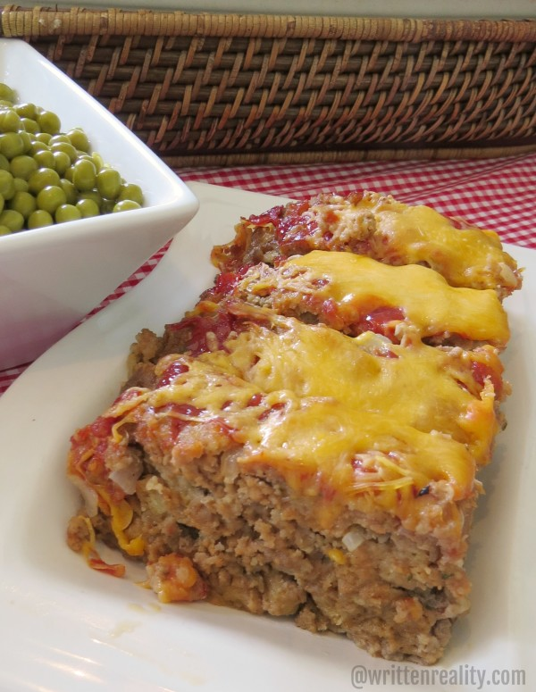

Meatloaf

Savory Tasting Meatloaf
This is the best meatloaf you will ever have! It goes perfect with homemade mashed potatoes and delicious vegetables like peas! This recipe will make the family go back for seconds!
It is even better the second time you have it! You can easily add some bread and make a meatloaf sandwich! If leftovers isn't your thing, the dog will love it!
Ingredients
- 2 lbs of beef
- 2 eggs
- 1 large red onion
- 1 package of Stuffing
- 1 cup of Milk
- 3/4 cup of ketchup (1/4 in meat)
- 1/2 of cheddar cheese
- 1/4 cup of italian dressing
Directions
- Preheat Oven to 375 degrees
- Cook onion in italian dressing, stir frequently and let cool
- Mix all but cheese and 1/2 cup of ketchup
- Put Mixture into a 9x13 pan and bake for 55 minutes
- Top with remaining ketchup and cheese and bake for 5 minutes